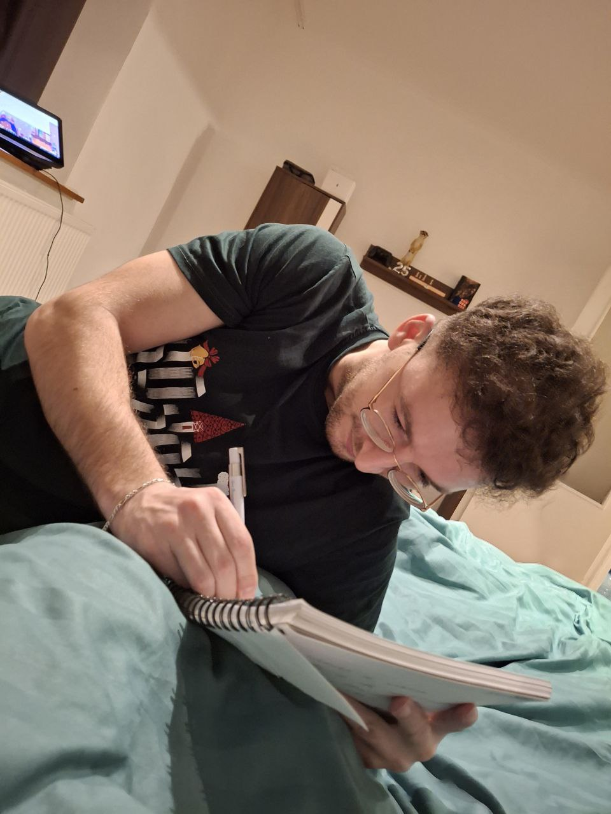
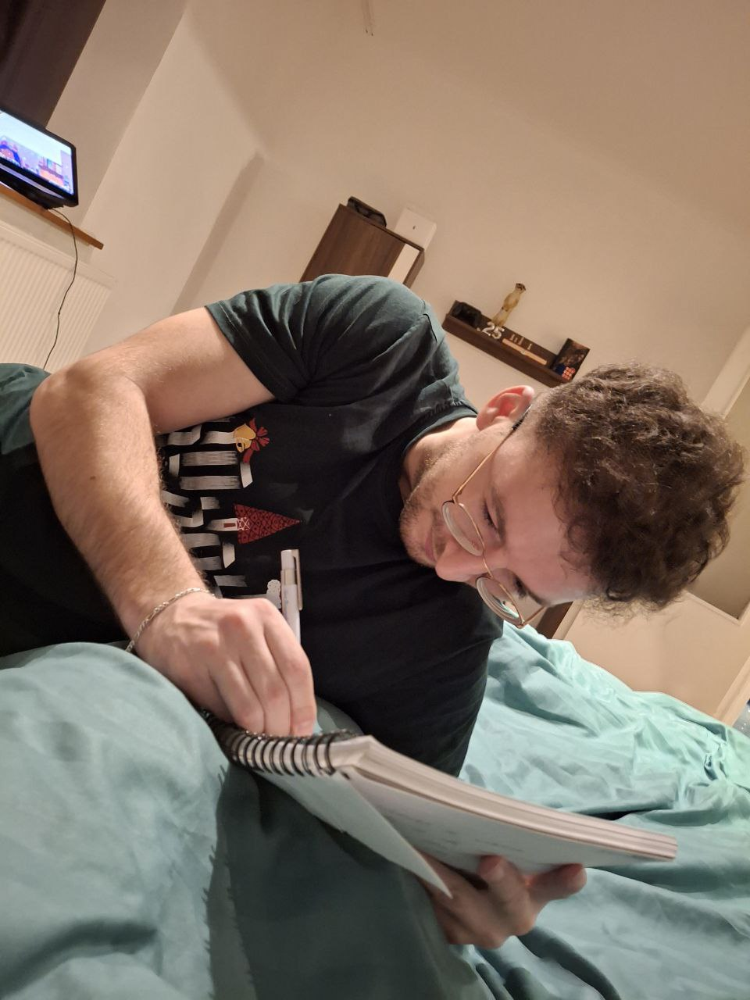

Corondan Flavius
Portofoliu Personal
 



Casă Sârbi


În acest proiect am realizat modelarea completă a casei mele din localitatea Sârbi, utilizând un nor de puncte generat prin fotogrammetrie, cu ajutorul unei drone. Pe baza acestui nor de puncte, am elaborat releveul 2D în AutoCAD, care include planurile, fațadele și secțiunile clădirii. Ulterior, am creat un model 3D în Archicad, care redă fidel elementele arhitecturale.
Zona Industrială Calea Buziașului


Am urmărit conturarea unei propuneri de dezvoltare pentru un sit urban de la maginea localității Timișoara, care are ca obiectiv integrarea unei abordări reziliente. S-a studiat amplasamentul, iar ca urmare, s-a conturat o viziune asupra modului de locuire și organizare a spațiului. Provocarea majoră a constat în armonizarea caracteristicilor existente ale zonei cu cerințele actuale ale vieții urbane. Propunerea răspunde nevoii de densificare eficientă, dar și a valorificării specificului local, în condițiile în care situl este înconjurat de elemente ostile.
Autostrada A1 între sectorul Deva-Margina


Am analizat impactul geografic al construirii autostrăzii A1 pe sectorul Deva–Margina, concentrându-mă asupra efectelor asupra reliefului, rețelei hidrografice, vegetației și faunei.Deși construcția autostrăzii a modificat peisajul inițial, s-a asigurat o coexistență armonioasă între infrastructură și natură. Proiectul a sporit conectivitatea regională și a generat un impact socio-economic pozitiv prin reducerea timpilor de transport, stimularea turismului local și apariția de noi servicii.
Alte Reprezentări


Ultima parte este o colecție de planșe în care am îmbinat reprezentări diverse, realizate în software-uri CAD și GIS: de la fațade istorice și profile ale drumurilor, până la hărți turistice, curbe de nivel și modele digitale de elevație și teren.